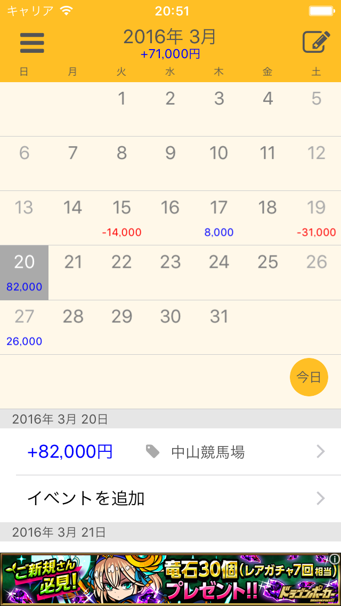
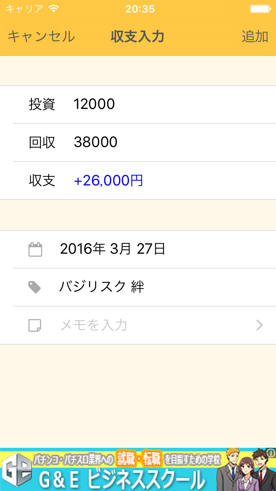
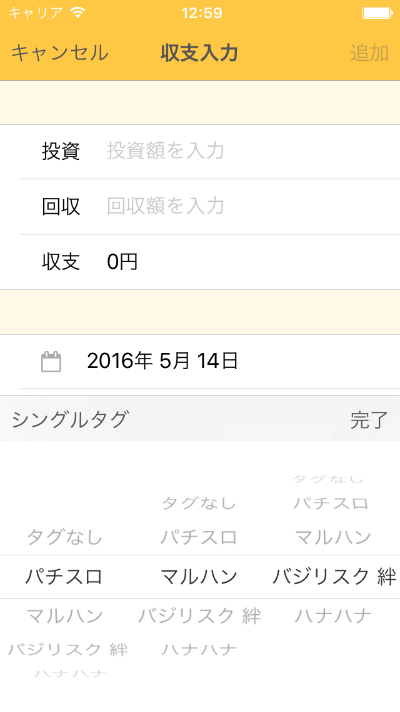
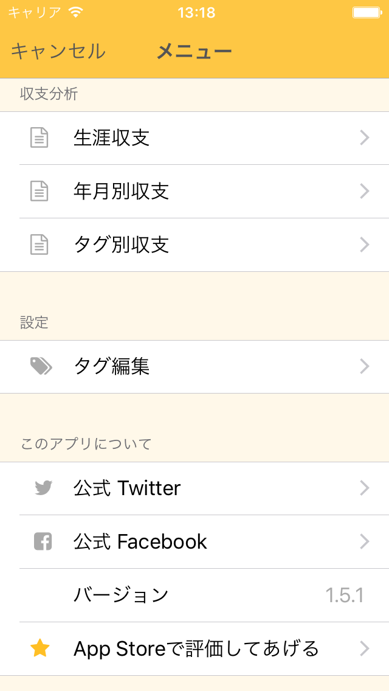
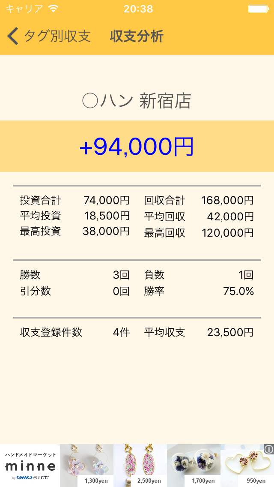
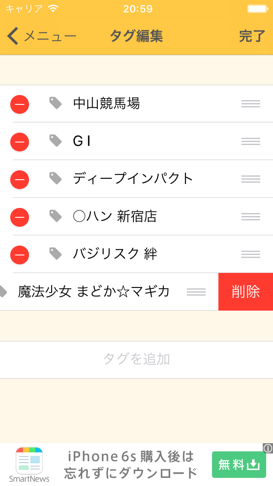

基本的な操作方法
カレンダー画面

- 一番メインとなる画面でその月の収支の一覧が表示されます。
- 選択中の日付がグレーになっていて、この状態で右上の をタップするか、画面下部の「イベントを追加」をタップするとその日の収支入力画面に移動します。
- 左上の をタップするとメニュー画面に移動します。
収支入力画面

- 投資額、回収額を入力し右上の「追加」をタップでデータの保存、「キャンセル」で保存されずにカレンダー画面に戻ります
- 収支情報は、投資額のみ、回収額のみでのざっくりした登録もできます。
- 詳細に登録したい場合はタグやメモも入力できます。
- タグ入力中にキーボード左上の「マルチタグ」をタップするとタグを複数選択できます。

- マルチタグモードでは３つまでタグを選択でき、より細やかな収支の情報が登録できます。
メニュー画面

- 収支の分析、タグの編集、アプリの情報やレビューなどができます。
- MoneyBookではみなさんのレビューをとても重要と考えており、多くの機能がレビューの声から生まれました。これからの開発の励みにもなりますのでぜひ評価してください。
収支分析画面

- 収支分析が表示される画面です。
- 生涯収支や期間別、タグ別などさまざまな分析が可能です。
タグ編集画面

- タグの編集画面です。
- ご自身のお好みでタグを追加、並び替え、削除ができます。削除はタグを左にスワイプすることでも行えます。